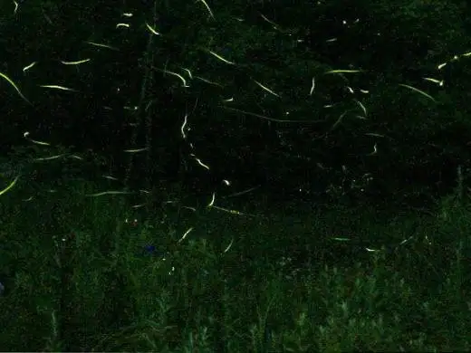
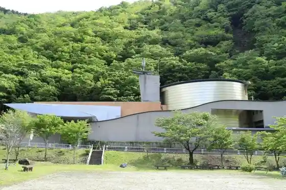
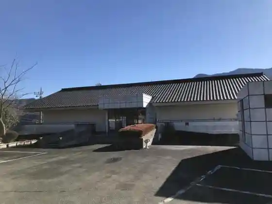
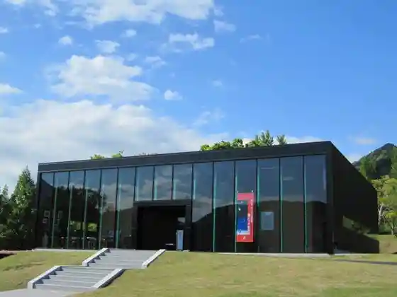

Minobu
Minobu · Yamanashi
Minobu
Highlighted on the Yamanashi map.

Sights
Isshoku Hotaru no Sato | Minobu no Hotaru Kansho
Kai Ogon Village Yu Yuki Oku Kanayama Museum (Kaiogonmura Yu no Okukinzanhakubutsukan)

Mokujiki no Sato Bisho Kan (Mokujiki no Satobishokan)

Fujigawa Kurafuto Park (Fujikawakurafutopaku)
Fujigawa Kirie no Mori Art Museum (Fujikawa Kirie no Moribijutsukan)

Minobu Yama Kudo Tera (Mi no Busankuonji)
Minobu Yama Ropuei (Mi no Busanropuei)
Fujigawa Kurabu (Fujikawakurabu)
Kawauchi Ryoichi Miya Kamo Shrine (Kawachiryoichi no Miyakamojinja)
Hiroshi Iori Campground (Koankyanpujo)
Fujimi Yama (Fujimiyama)